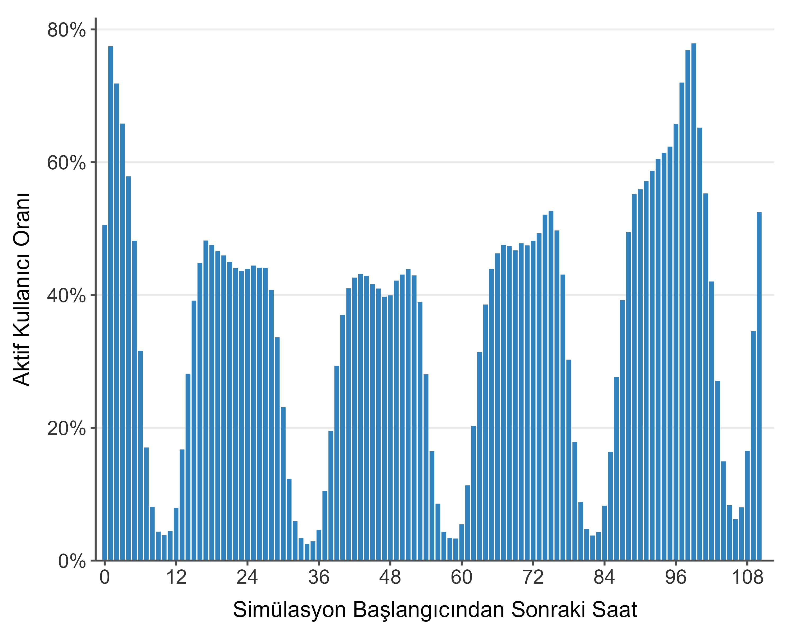
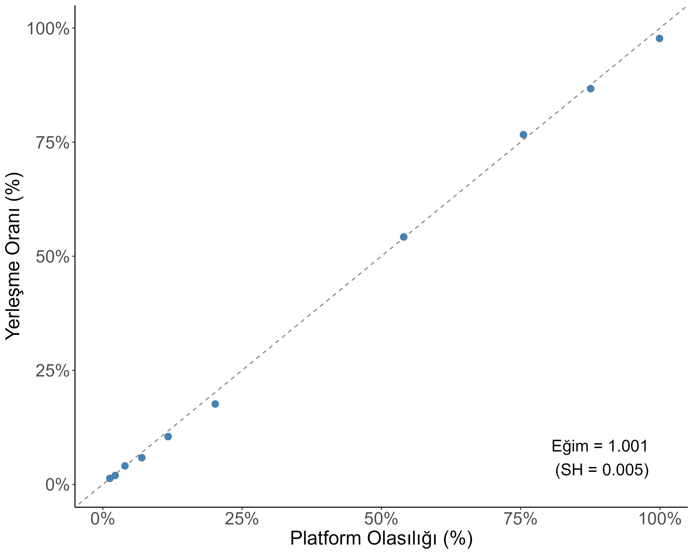
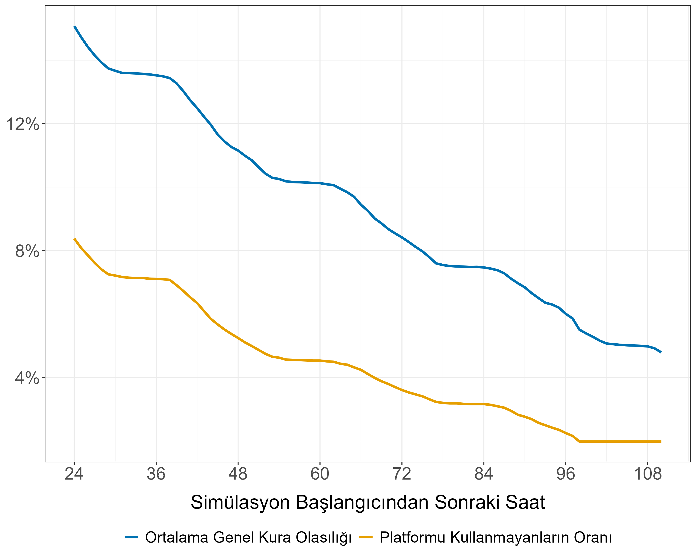

Giriş
Dünyanın birçok yerinde öğrencilerin okullara, doktorların hastanelere yerleştirilmesi gibi sorunların çözümünde merkezi atama mekanizmaları kullanılır. Bu mekanizmaların çoğunda eksik bir yön vardır: Atanacaklar (öğrenciler, doktorlar) çoğu zaman atanma olasılıklarıyla ilgili yeterli bilgiye sahip değildirler. Sınav sonucu gibi kesin bir kriterin bulunmadığı atama örneklerinde bu bilgi eksikliği daha ciddi boyutlara ulaşmaktadır.
Bu soruna belki de dünya genelinde en önemli istisnayı DHYAsistani.com oluşturuyor. DHYAsistani.com'un çalışma mantığını kısaca özetlemek gerekirse, zorunlu hizmet ataması öncesi bu platforma kaydolan doktorlar akıllarındaki tercih listelerini platforma yüklüyorlar. Bu tercih listelerini temel alan ve her birkaç saniyede bir gerçekleştirilen simülasyonlar doktorlara farklı hastanelere yerleşme olasılıklarıyla ilgili neredeyse anlık bilgi sunuyor. Hem verilen bilginin detay düzeyi hem de sıklığı bu platformu dünyadaki diğer örneklerden ayrıştıran en önemli özellikler.
Peki doktorlara verilen bu bilgi atama sonuçlarını iyileştiriyor mu? Bu bilgi ne derece verimli şekilde kullanılabiliyor? Doktorların platformdaki tercihleri ve gerçekteki tercihleri örtüşüyor mu? Eğer bazı doktorların platformdaki tercihleriyle gerçekteki tercihleri aynı değilse platformda sunulan olasılıkların geçerlilik düzeyi nedir? DHYAsistani.com'un Yale Üniversitesi ile yürüttüğü akademik çalışma kapsamında bu ve başka sorulara yanıt aradık. Bu sorulara bulduğumuz yanıtların bir kısmını teknik olmayan, erişilebilir bir özet halinde sizlere sunmak istedik. Bu web sayfasının farklı bölümlerinde soruların yanıtlarını bulabilirsiniz.
Kullanım İstatistikleri
Atamaya katılan neredeyse bütün doktorların platformu aktif bir şekilde kullandığı bilinen bir gerçek. Bu çalışmanın temelini oluşturan Mart ve Eylül 2025 atamalarında kuraya katılan doktorların platform kullanım oranı Mart ayında %97'nin, Eylül ayında %98'in üstündeydi.
Platformu kullanan doktorların oranı kadar önemli bir diğer konu kullanımın ne kadar yoğun olduğu. 2025 Eylül atamasında platform kullanıcılarının aktiviteleri sonucunda aşağıdaki grafik oluşmaktadır:

Özetle, gece saatleri hariç neredeyse günün her saatinde atamaya katılan doktorların en az yaklaşık %40'lık bir bölümü platformu aktif olarak kullanmakta. Simülasyonun başlangıcında ve sonunda bu oran %80'lere varmaktadır.
Platformdaki Olasılıklar ve Gerçek Sonuçlar
DHYAsistani.com ile ilgili önemli bir soru da platformdaki olasılıkların gerçek olasılıkları ne kadar yansıttığıdır. Bilindiği gibi kullanıcılar asıl tercih listelerini resmi portala yüklemektedir, dolayısıyla kullanıcıların en azından bir bölümü için DHYAsistani.com'daki son tercihlerle gerçek tercihlerin birbirinden farklı olması ihtimal dahilindedir.
Bu soruyu yanıtlarken platformdaki kullanıcıların son tercih listelerindeki yerleşme olasılıklarını ve yerleştikleri hastaneleri kullanacağız. Bazı basit istatistiklerle başlayalım. Her bir atamada kullanıcıların belirli bir bölümü için DHYAsistanı.com bazı hastanelere yerleşme olasılığını %100 olarak tahmin etmektedir. Örneğin Eylül 2025 atamasında bu kullanıcıların oranı %25 düzeyindeydi. Peki bu kullanıcıların yüzde kaçı gerçekten bu hastanelere yerleşti? Mart 2025 atamasında bu kullanıcıların yaklaşık %98'i, Eylül ayında kullanıcıların %95'i bu hastaneye yerleşti. Kullanabileceğimiz bir diğer basit istatistik platformdaki tercih listesinde olmayan bir hastaneyi tercih edip yerleşen kullanıcıların oranı. Bu oran Mart 2025 atamasında %1, Eylül 2025 atamasında %2 civarındaydı.
Yukarıdaki istatistiklerden bazı çıkarımlar yapabiliriz. Birincisi, platform kullanıcılarının büyük çoğunluğu resmi tercihlerinde de platformdaki tercihleri doğrultusunda hareket etmektedir. Diğer bir çıkarım da kullanıcıların ufak bir bölümünün platformdaki tercihlerinden farklı listeleri kullandığıdır. Peki bu diğer kullanıcılar için ne anlam ifade ediyor, platformdaki olasılıklara güvenilebilir mi?
Bunun için şunu hesaplayabiliriz: Kullanıcıların platformdaki son listelerine bakalım. Bu listelerde kullanıcının listesindeki her bir hastaneye yerleşme olasılığı verilmiştir. Örneğin, platform bir doktor-hastane eşleşmesinin olasılığını %20 olarak tahmin ediyor diyelim. %20 olasılıkla gerçekleşeceği düşünülen bütün eşleşmelere baktığımızda bu eşleşmelerin gerçekten %20'si mi gerçekleşmiştir? Eğer böyleyse platformdaki %20 gerçekte de %20 demektir anlamını çıkarmak mümkün.
Bu hesaplamadaki bir zorluk dikkatinizi çekebilir: Platformun %53.3 olasılık atadığı bir yerleşme gerçekleşti diyelim. Eğer tam olarak bu olasılığın tahmin edildiği sadece bir yerleşme varsa, bu yerleşmelerin %100'ü gerçekleşmiş olacaktır. Daha bilgilendirici karşılaştırmalar yapabilmemiz için bir gruplandırma yapmamız gerekli.
Son listelerdeki bütün doktor-hastane eşleşmelerini yerleşme olasılığına göre eşit örneklem boyutlu gruplara ayıralım. Her bir grup için platformdaki ortalama yerleşme olasılığını ve gerçekte bu eşleşmelerin yüzde kaçının gerçekleştiğini hesaplayalım. Bu bize Eylül 2025 ataması için aşağıdaki grafiği vermektedir:

Grafiğin sağ alt köşesindeki eğim ve standart hata bağımlı değişkenin doktor-hastane eşleşmesinin gerçekleştiğine dair bir endikatör, ana bağımsız değişkenin de aynı eşleşme için platformdaki olasılık olduğu bir regresyondan elde edilmiştir.
Özetle, hem grafik, hem de grafiğin sağ alt köşesindeki katsayı şunu söylemektedir: Platformdaki %1'lik bir olasılık artışı, gerçekte de hastaneye yerleşme olasılığının %1 artmasına istatistiksel olarak denktir, ve platformdaki olasılıklar gerçekleşme olasılıklarını neredeyse birebir olarak yansıtmaktadır.
Olasılıkları Bilmek İşe Yarıyor Mu?
Doktorların DHYAsistani.com'u çok aktif bir şekilde kullandığını ve platformun tahminlerinin gerçekle neredeyse birebir örtüştüğünü öğrendik. Peki bu bilgi aktarımı işe yarıyor mu?
Aşağıdaki grafik buna dair ilk ipuçlarını vermekte:

Üstteki eğri platformdaki ortalama genel kura olasılığının zaman içindeki değişimini, alttaki eğriyse platformda henüz listesi bulunmayan doktorların oranını göstermektedir. Ortalama genel kura olasılığında platformdaki ilk günden son saatlerine kadar çok ciddi bir düşüş gözlemlenmektedir. Bu düşüşün bir kısmı platformu kullanmayan doktorların sayısındaki azalmayla açıklanabilir olsa da genel kura olasılığındaki düşüşün çok daha keskin olması platformun gerçekten sonuçları iyileştirdiğine dair bir izlenim sunuyor.
Bu izlenimi daha net bir sonuca ulaştırmak için DHYAsistani.com'un açık olduğu bir kurayı alıp, DHYAsistani.com olmasaydı sonuçlar ne olurdu sorusuna cevap verebilmemiz gerekirdi. Bu deney ne yazık ki (belki de iyi ki) mümkün değil. Akla gelen bir başka yöntem de DHYAsistani.com'un olmadığı önceki dönemlerle sonraki dönemleri karşılaştırmak, fakat açık kadrolar atamalar arasında değişkenlik gösterebildiği için de bu yaklaşım çok geçerli değil.
Bu noktada iki çözüm devreye giriyor: İlki, platformdaki bütün kullanıcıların ilk yaptığı tercihlere bakarak, eğer atama bu tercihlerle yapılsaydı genel kura olasılıkları nasıl olurdu diye sormak. İkincisi, doğrudan kullanıcılara eğer DHYAsistani.com'u kullanmasalardı tercih listeleri nasıl olurdu diye sormak.
İlk yaklaşımı biraz açmak gerekirse, bir doktorun ilk önce Ankara'daki bir hastaneyi ilk tercih, Mersin'deki bir hastaneyi ikinci tercih olarak yazdığını düşünelim. Doktorumuz saatler ilerledikçe Mersin'i ilk sıraya taşımış olsun (belki Ankara'daki olasılıklar azaldığı için), ve ikinci sıraya da Osmaniye'deki bir seçeneği eklemiş olsun. Ankara, Mersin listesinin Mersin, Osmaniye listesine dönüşmesinde DHYAsistani.com'un payı olduğunu varsayarak, ilk listenin doktorumuzun DHYAsistani.com olmadığı senaryodaki listesine daha iyi bir yakınsama olacağını düşünebiliriz. Bunu bütün doktorlar için yapalım. Eğer doktorlar bu listeleri göndermiş olsaydı, ortalama genel kura olasılığı ne olurdu?
Mart 2025 ataması için, eğer doktorlar platformdaki ilk tercihlerini kullanmış olsalardı, ortalama genel kura olasılığı %13.8 olacaktı. Simülasyon sonucunda bu olasılık %7.3'tü. Bu ortalama genel kuraya kalma olasılığında %47'lik ciddi bir düşüş anlamına geliyor. Eylül 2025 atamasında, eğer doktorlar platformdaki ilk tercihlerini kullansaydı ortalama genel kura oranı %8 olacaktı, simülasyonlar sonucunda bu oran yaklaşık %4.8'di. Benzer şekilde burada da %40'lık bir düşüş söz konusu.
Eylül 2025 atamasında platform kullanıcılarına eğer DHYAsistani.com'u kullanmasalardı ilk iki tercihlerinin nasıl olacağını sorduk. Bu yaklaşımı kullanarak da platform olmasaydı atama sonuçları nasıl olurdu diye düşünmek mümkün. Kullanıcılar eğer bu ankette belirttikleri ilk iki hastaneyi tercih etmiş olsalardı bu hastanelere yerleşme olasılıkları ortalama %77.6 olacaktı. Simülasyonların sonunda bu kullanıcıların ilk iki tercihlerinden birine yerleşme olasılıkları %93.5'a çıkmıştı.
Bütün bu veriler ışığında, doktorların platformda çok aktif bir şekilde geçirdikleri zamanın atama sonuçlarını ciddi anlamda iyileştirdiğini söylemek yerinde olacaktır.